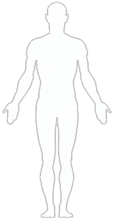

Фильтры исследований
- МРТ
- КТ
- Рентген
 УЗИ
УЗИ- ФД
- Конс
- Анализы



Показать все исследования
☰
Журнал исследований
07.12.2016 | 13:06
МРТ Стопа
26.09.2017 | 17:06
Электронейромиография (ЭНМГ)
07.12.2016 | 13:06
МРТ Шейный отдел позвоночни...
26.09.2017 | 17:06 ФД
Электронейромиография...
07.12.2016 | 13:06
МРТ Стопа
26.09.2017 | 17:06 ФД
Электронейромиография...
Добро пожаловать в атлас пациента
Ознакомьтесь с краткой инструкцией и возможностями сервиса «Атлас Пациент».
Возможности атлас пациента
В атласе пациента можно посмотреть все заключения по всем исследованиям
Из атласа пациента можно распечатать любое заключение
Наглядное представление динамики измерений по каждому показателю
Атлас пациента позволяет посмотреть результаты исследований удаленно